John Steuart Curry, Tragic Prelude (detail), mural begun 1937. More on this image at slide g2.
Kansas Territory, 1856
Bleeding Kansas
- Sack of Lawrence (May 21, 1856)
- Proslavery posse destroyed two newspaper presses and burned the Free State Hotel
- Pottawatomie Massacre
- Antislavery band led by John Brown retaliates, kills five proslavery settlers
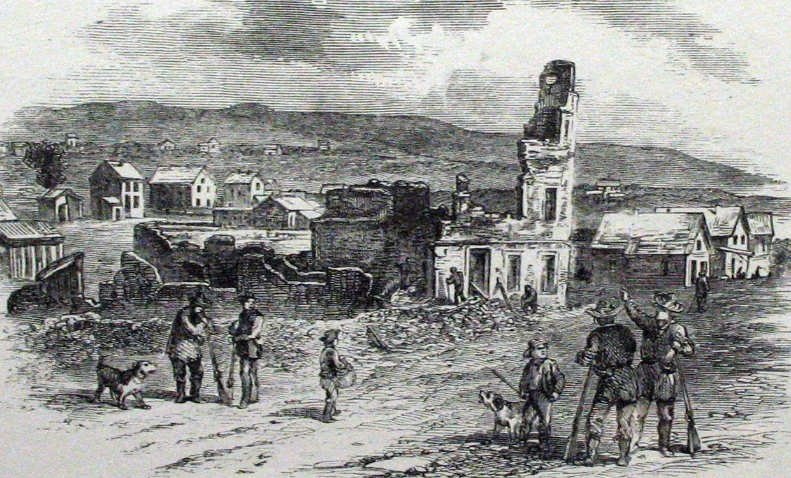
Anti-Racism
Abolitionism
- 18th century: Enlightenment thinkers and Quakers begin to criticize slavery
- Moral disapproval becomes widespread
- All northern states begin to abolish slavery between 1777 and 1804
- International slave trade banned in 1807 (effective 1808), as the Constitution allowed
- Now Abolitionists turn attention to Southern States
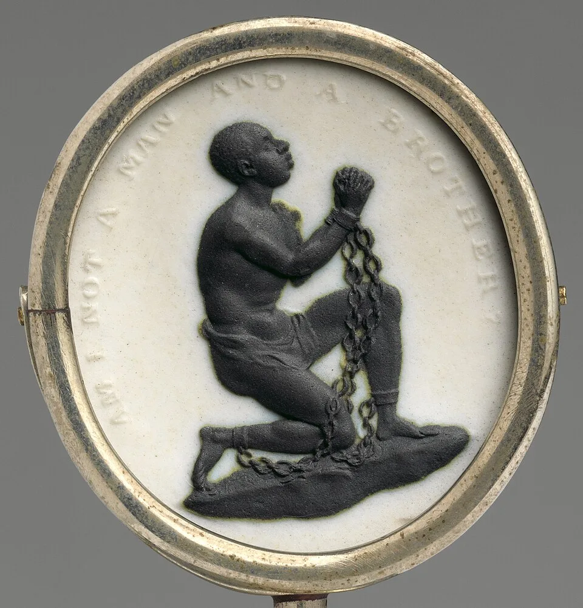
Anti-Racism
William Lloyd Garrison
- Influenced by New England Federalism and Christian benevolence
- Newspaper editor: jailed seven weeks in 1830 for libeling a merchant whose ship carried enslaved people
- 1831 Established the Liberator
- 1833 Organizes the American Anti-Slavery Society
- Increasingly radical
- Rejects church and state
- Publicly burns copy of constitution: "No Union with Slaveholders"
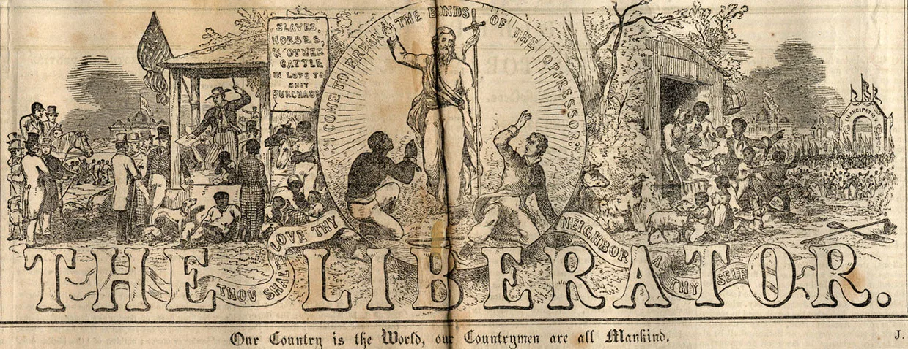
Video clip
Who is William Lloyd Garrison?
American Anti-Slavery Society
- Activist arm of the Abolition Movement
- Membership reaches about 250,000 by 1838
- Signed anti-slavery petitions, printed propaganda, sent out agents and lecturers
- Participants from religious community and free blacks
- Public meetings often ended with mob violence
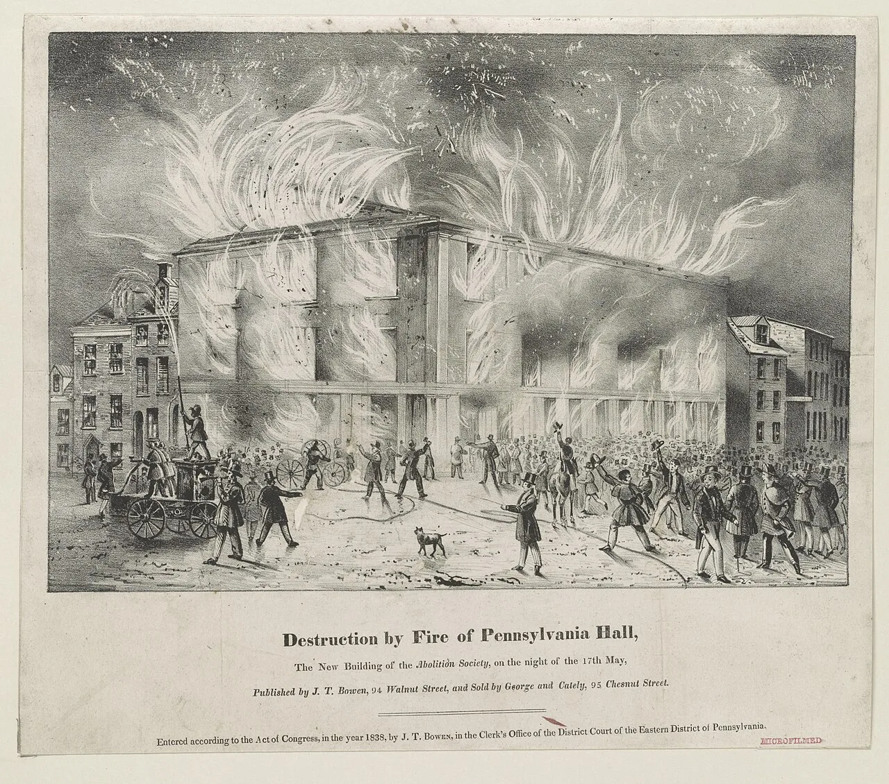
John Brown
One biographer's verdict
"The Man Who Killed Slavery, Sparked the Civil War, and Seeded Civil Rights"
Do you agree?

Historiography
A Historiographical Discussion
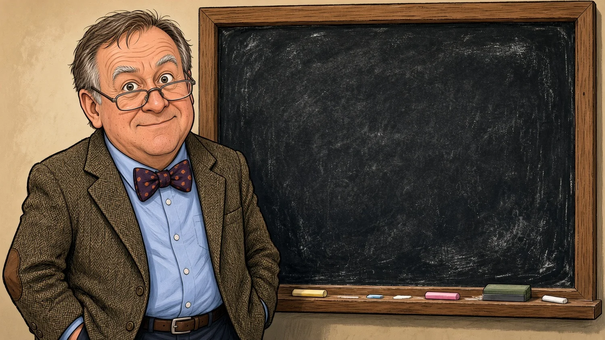
Historiography
The study of how history has been written and interpreted over time, and why historians' accounts change.
For John Brown: madman, terrorist, or hero? The answer has changed with who was telling the story, and when.
Historiography · Image and memory
Two Pictures of John Brown
The historiographical questionBrown did not change after 1859. Why did the way Americans pictured him change?
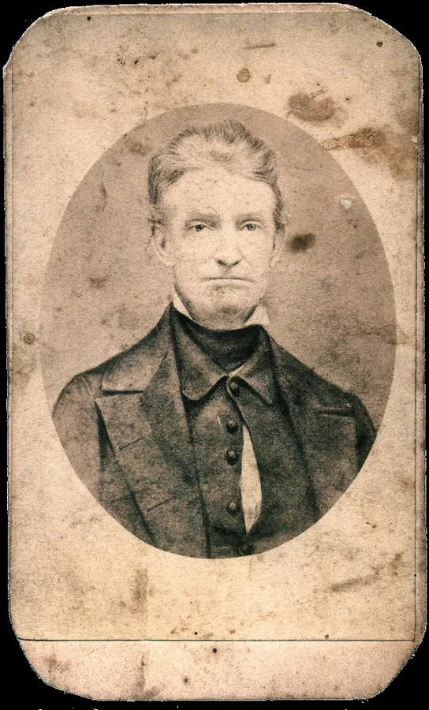
Textbooks called Brown sane before 1890, insane from 1890 to about 1970, and slowly sane again after that. Brown did not change; the country did. One historian reads the shift as a measure of white racism in American society.
John Brown: Life and Road to Kansas
- Militant abolitionist
- Influenced by his father and by an enslaved boy he befriended, and saw beaten, during the War of 1812
- Influenced also by Christianity
- After the Kansas-Nebraska Act, five sons settle in Kansas; Brown follows in 1855 when they ask for help
- Border Ruffians and Sack of Lawrence push John Brown to violence
- Swears Vengeance

John Brown's Vengeance
- In 1855, after five of his sons had settled in Kansas, the longtime abolitionist Brown followed when they asked for help against proslavery neighbors
- Proslavery violence came first: Missourian vote fraud and several free-state settlers killed; free-staters, the majority, first tried the ballot box, then formed a rival government
- On May 21, 1856, a proslavery posse sacked Lawrence, destroying two newspaper presses and burning the Free State Hotel
- The next day in Washington, Representative Preston Brooks caned Senator Charles Sumner for an antislavery speech
On the night of May 24-25, 1856, Brown led a small armed band toward a proslavery settlement on Pottawatomie Creek. The next slide tells what happened that night.
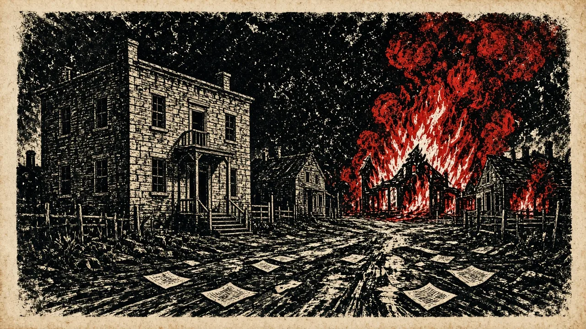
Short documentary · 1:33
The Pottawatomie Massacre: A True Story
Significance of Pottawatomie
- Initiated South's Misreading of the North as rabid abolitionists
- Changed Terms of Slavery Struggle
- Previously, abolitionists seen as cowards, now as ferocious criminals
- Aroused New Emotion in Slavery's Defenders: FEAR
- "there is no one for whom the ruffians entertain a more wholesome dread than Captain Brown. They hate him as they would a snake, but their hatred is composed of 9/10ths fear" (a contemporary observer)
Kansas Territory, August 30, 1856
The Battle of Osawatomie
- After Pottawatomie, proslavery forces struck back
- At dawn, a proslavery minister, Martin White, shot and killed Brown's son Frederick outside town
- John W. Reid led 250 to 400 Missourians, with a cannon, against the free-state town
- Brown's 30 to 40 men fired from the timber along the Marais des Cygnes, holding about an hour
- Low on ammunition, they retreated across the river; the raiders looted and burned the town
- About five or six free-state men died, Frederick among them; proslavery losses are disputed
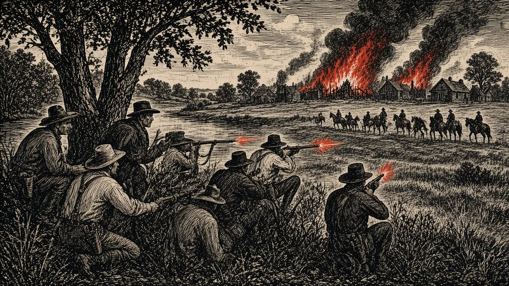
Historiography · Kansas, 1856
Osawatomie: Brown the Defender
The historiographical questionWhich of Brown's Kansas fights do textbooks remember, and how does that choice shape his story?
Pottawatomie Creek · May 24-25, 1856
Brown is the attacker. His band kills five proslavery men in the night.
14 of 18textbooks in Loewen's study tell this story
Osawatomie · August 30, 1856
Brown is a defender. He leads about 30 to 40 free-state men against 250 to 400 Missouri raiders, holds them for about an hour, then retreats; the raiders burn the town.
0 of 18textbooks in Loewen's study mention it
Telling only the story where Brown attacks makes him look like the aggressor in a fight that proslavery forces had started.
1858-1859
Planning the Raid on Harpers Ferry
- May 1858At a convention of Black and white abolitionists in Chatham, Canada West, Brown's plan and a provisional constitution are adopted; Brown is elected commander in chief
- 1858-59Six wealthy Northern abolitionists secretly raise money for Brown's guns and pikes
- Dec. 1858Brown's men raid Missouri and free eleven enslaved people; a slaveholder is killed; Brown leads the group more than 1,000 miles to freedom in Canada
- Summer 1859Brown's 21 men gather at a rented Maryland farm near Harpers Ferry, with boxes of rifles and hundreds of pikes for the people they hope to free
Harpers Ferry was planned, organized, and paid for over more than a year. It was not a lone man's sudden impulse.
Raid on Harpers Ferry
- Intent on igniting slave insurrection
- Proposed to attack and capture federal arsenal at Harpers Ferry, Virginia
- October 16, 1859: with 18 of his 21 men (5 were Black), Brown captured the arsenal
- U.S. Marines under the command of Lieutenant Colonel Robert E. Lee put down the raid; they wounded Brown and killed or captured most others
- At least 16 people died: 10 raiders, 4 townspeople, a Marine, and an enslaved man who had joined the raiders
- Played on Southern fears of slave rebellion

Video clip
John Brown's Bloody End to Slavery
Historiography · Harpers Ferry
Did Enslaved People Join the Raid?
The historiographical questionHow have textbooks and historians answered this question, and why have their answers changed?
The older textbook story
No enslaved people really joined Brown. One textbook said the raiders "forcibly 'freed' about 30 slaves" and called them "these reluctant people."
Newer research
Brown's men armed about thirty enslaved men, some from plantations the raiders never visited. They stopped and guarded a train, and Virginia later indicted eleven of them.
In 1931 the United Daughters of the Confederacy dedicated a Harpers Ferry monument to Heyward Shepherd, a free Black railroad worker killed by the raiders, calling him "representative of Negroes of the neighborhood, who would not take part."
Older standard accounts describe little enslaved participation. Newer research calls the "would not take part" story simply inaccurate. Weigh the evidence on both sides.
Video clip
America's First Terrorist or National Hero?
John Brown Executed
- Convicted of treason against Virginia, conspiring with slaves to rebel, and murder; sentenced to death
- Outpouring of Grief in the North
- White southerners realized threat to security not over
- Changed public opinion in south
- Viewed Republican party as embodiment of John Brown's view
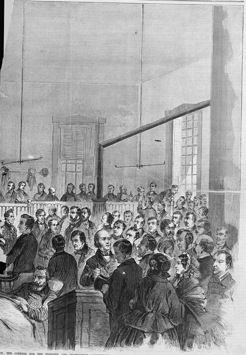
1859-1861
The Road to Secession
- Southern towns form vigilance committees and expand militias; many blame the "Black Republicans"
- Edmund Ruffin sends Brown's pikes to slave-state governors, labeled "sample of the favors designed for us by our Northern Brethren"
- November 1860: Lincoln is elected; South Carolina secedes in December, and six more states follow by February 1861
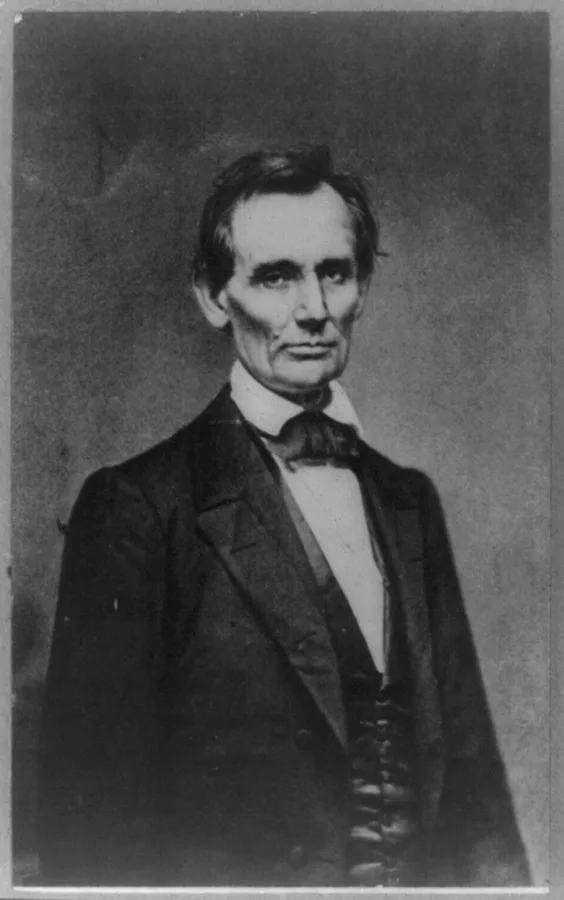
Primary sources · 1859
In His Own Words
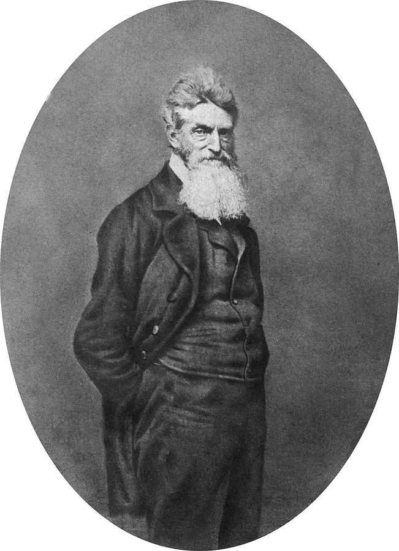
Martyrdom of John Brown
- Moved the boundary of acceptable thoughts and deeds regarding slavery
- Captured attention of the nation like no other abolitionist
- Willingness to die for the right had a moral force
- "John Brown's Body" and Battle Hymn of Republic
- Northern sympathy shocks and outrages South
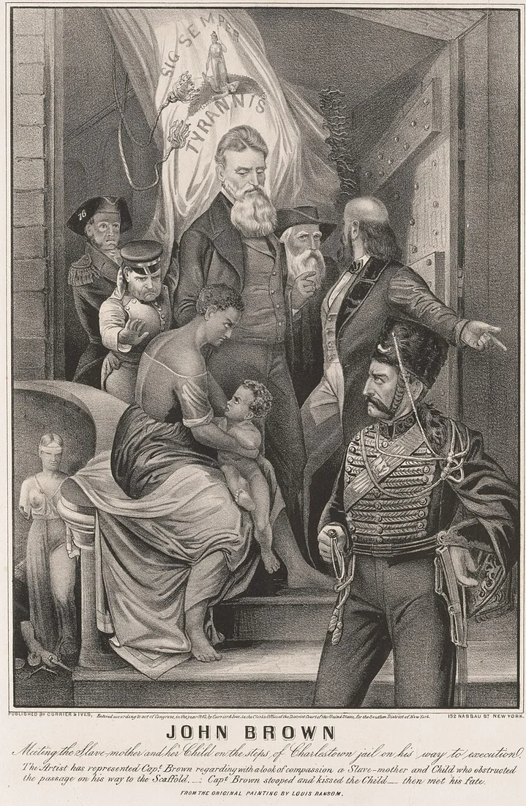
Myth and History · 1859 and after
John Brown: From History to Myth
"[His] martyrdom, if it shall be perfected, will make the gallows glorious like the Cross."
Ralph Waldo Emerson, Boston, November 1859"Some eighteen hundred years ago Christ was crucified; this morning, perchance, Captain Brown was hung."
Henry David Thoreau, Concord, October 30, 1859There was no kiss on the jail steps: soldiers kept the crowd far from Brown. On his way out he handed a guard a note: "I John Brown am now quite certain that the crimes of this guilty land will never be purged away, but with blood."
Admirers turned a man who chose violence into a saint. Ask who made each image, when, and why.
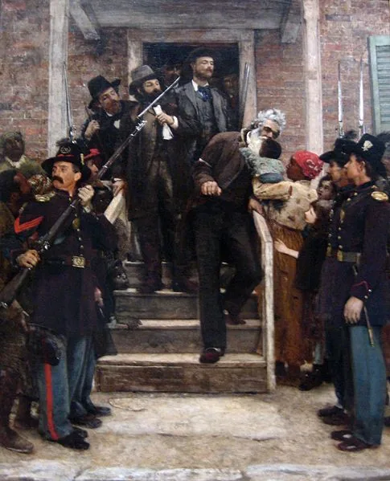
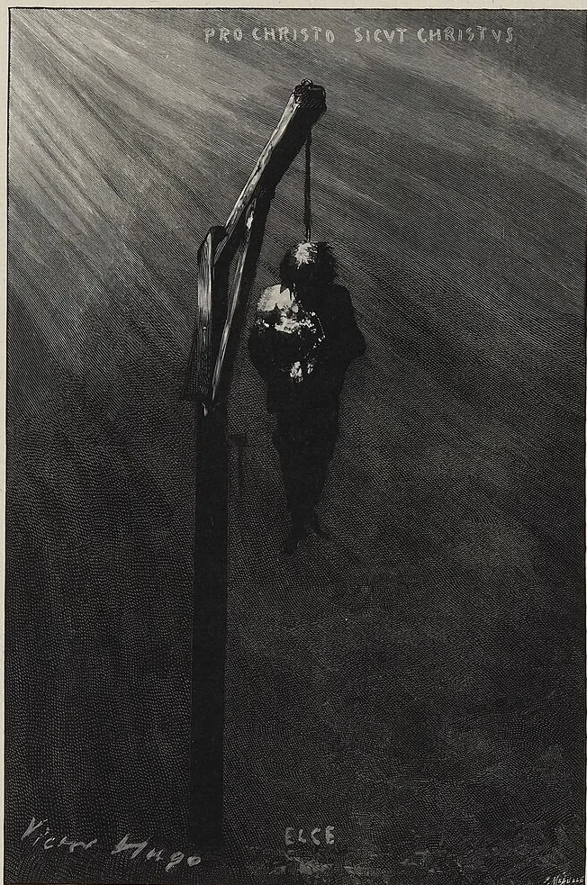
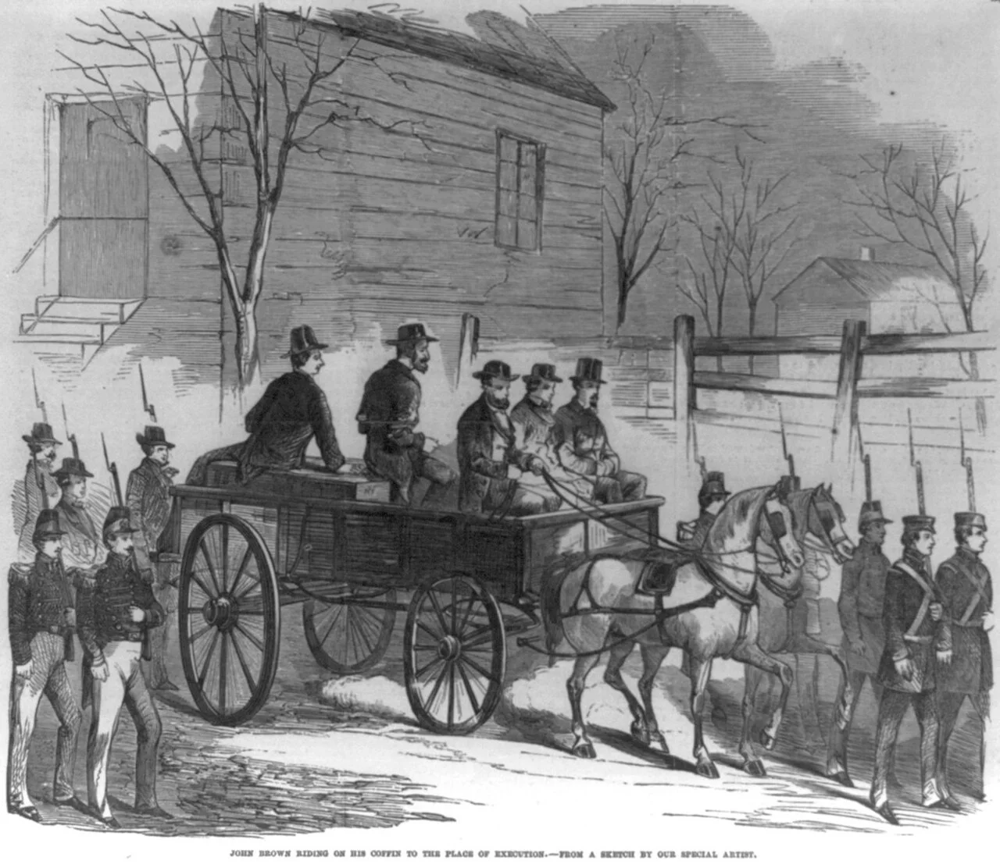
Anti-Racism
How Black Americans Saw John Brown
- Black Americans who met Brown did not think him crazy
- Frederick Douglass, Harriet Tubman, Martin Delany, and Henry Highland Garnet knew and respected Brown
- Brown tried to recruit Douglass and Tubman; illness is the usual explanation for Tubman's absence at Harpers Ferry
- December 2, 1859: Black-owned businesses across the North closed in mourning
- 1918: alumni of Storer College, a Black college at Harpers Ferry, dedicated a stone to "John Brown and his 21 men"
"I could live for the slave, but he could die for him."
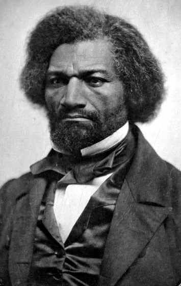
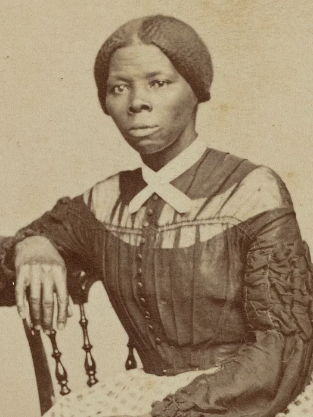
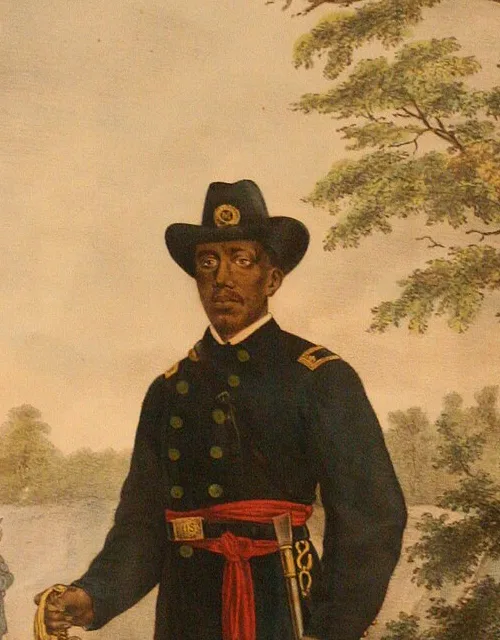
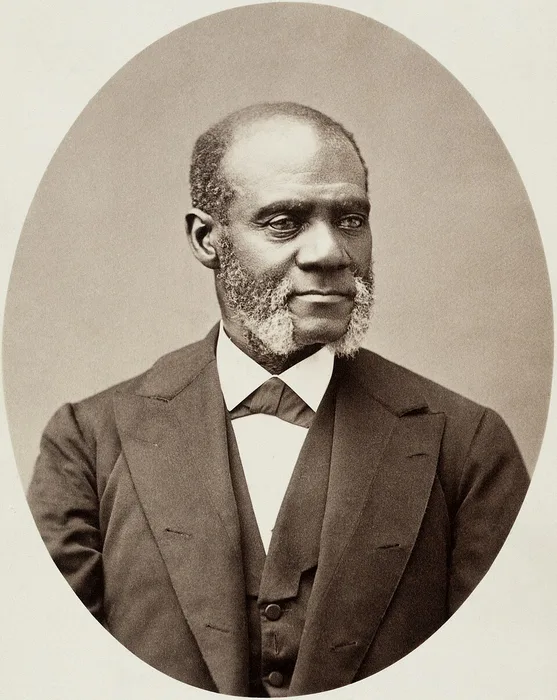
John Brown and Anti-Racism in America
End of Lecture
Thank you for working through this lecture.